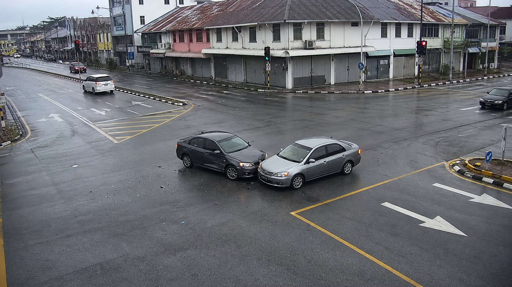

Status: critical - multi-sensor confirmation
Sensor fusion
Correlated
Audio and visual verification

Impact zone
8 kHz4 kHz0 Hz
Collision signature--
First arrivalN1
Clock drift2.4 ms
Localization error--
Packet loss0%